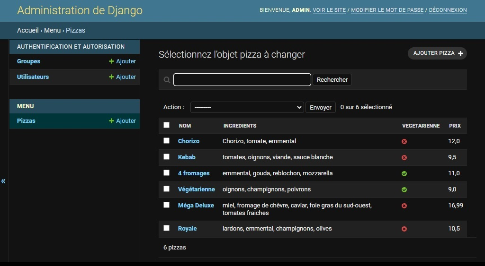
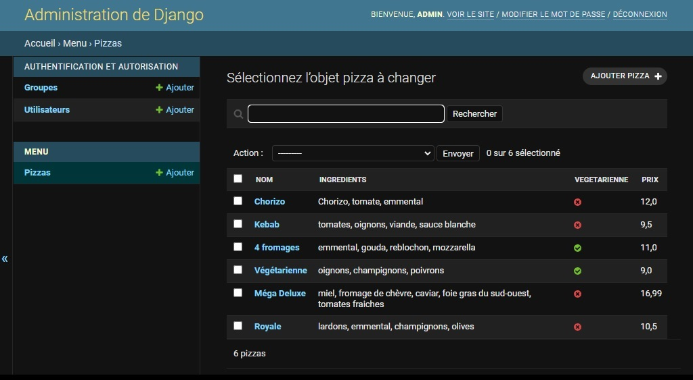

|
Anthony Barbe |
J'ai reproduit ce site web de type vitrine de pizzeria au cours de mon autoformation. Le site affiche un menu de pizzeria avec différentes informations sur les pizzas. Conçu grâce au framework Django, il possède une interface d'administration qui permet de modifier à volonté le menu affiché.
En parallèle du site, j'ai reproduit une application bureau et mobile qui reprend le visuel du site. Elle affiche le menu grâce à une API intégrée au site qui permet de le récupérer au format JSON.
Ce projet constitue donc un système complet site web, application bureau et application mobile.
Technologies utilisées
: HTML, CSS, Python, Django, SQLite, JSON, Kivy (pour l'application)
 
